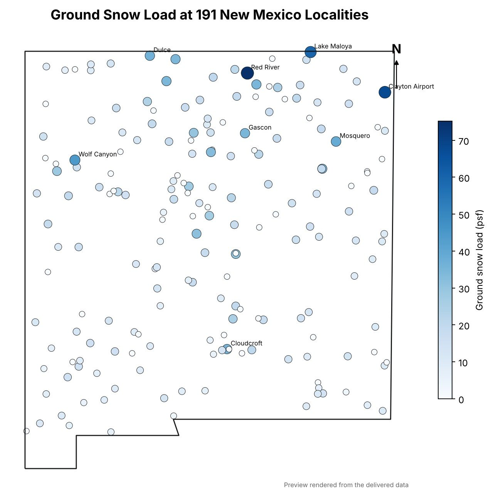

Cartography & Thematic MappingFig. 1 Ground snow load at 191 New Mexico localities (preview rendered from the delivered KMZ)
New Mexico Cities Snow-Load & Elevation KMZ
Built a Google Earth KMZ of 191 New Mexico localities across 34 counties, carrying ground snow-load and elevation attributes from a published snow-load table.
- Location
- New Mexico, USA
- Year
- 2026
- Client
- Upwork client, USA
- Tools
- QGIS, Google Earth, KML/KMZ


Map preview rendered from the delivered KMZ.
Challenge
Turn a printed table of ground snow loads for New Mexico localities into a Google Earth file the client could explore.
Approach
- Extracted the snow-load table
- Located each locality and attached snow load, elevation and county
- Exported a styled KMZ with pop-up attributes for Google Earth
Results
- 191 localities across 34 counties, with ground snow loads from 0 to 75.2 psf
- The highest loads are in the northern mountains (for example Red River, Lake Maloya, Dulce)